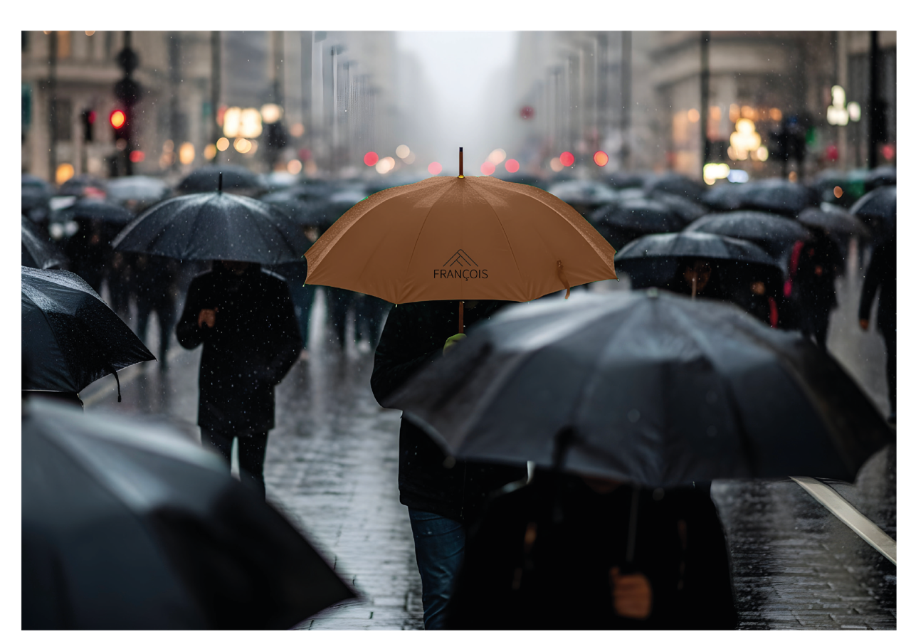
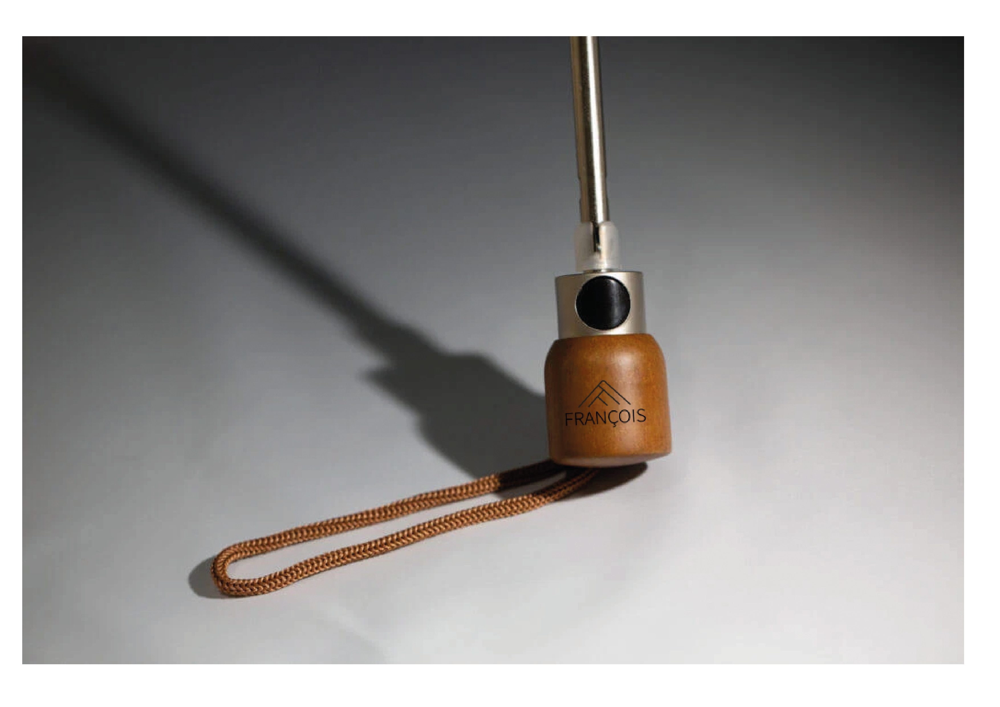

01 / 10
Identité · Luxe
La Fabrique de Parapluies François Frères.
Maison historique fondée en 1882, François Frères est l'architecte du parapluie de luxe français. Entre savoir-faire ancestral et ingénierie de précision, elle façonne des pièces d'exception conçues comme de véritables armures urbaines. J'ai opéré une refonte globale de l'identité de marque afin d'inscrire cet héritage dans les codes esthétiques contemporains — dépoussiérer l'image de l'artisanat traditionnel pour capter une clientèle plus jeune et cosmopolite.
Client
François Frères
Année
2024
Scope
Identité globale
Catégorie
Luxe · Artisanat



